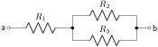
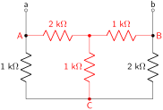
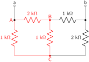
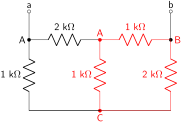
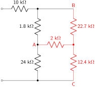
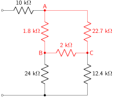
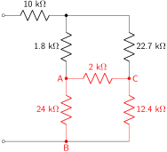

Equivalent Resistance
1.
Calculate the equivalent resistance (as seen between nodes a and b) of the resistors shown in Figure 2.10.1.

Answer.
\begin{equation*}
R_{EQ} = R_1 + \frac{R_2R_3}{R_2+R_3}
\end{equation*}
Solution.
Combine \(R_2\) and \(R_3\) in parallel. Then combine that result in series with \(R_1\text{.}\)
2.
Minimize the circuit diagram shown in Figure 2.10.2 as much as possible.
Answer.
Solution.
The only circuit elements that can be combined in this circuit are the 10 Ω and 24 Ω resistors. These two resistors are in series, with an equivalent series resistance of 34 Ω. No other resistors are purely in series or purely in parallel. The two DC sources cannot be combined, as they are two different types of sources and are additionally neither connected in series nor in parallel.
3.
Use the circuit diagram shown in Figure 2.10.4 to calculate the equivalent resistance between nodes a and b. Each resistor has a value of 1 kΩ.
Hint.
Use either a delta-wye transform or a wye-delta transform.
Answer.
1.40 kΩ
Solution.
Start by re-drawing the circuit to include resistor values and highlight nodes a and b for calculating the equivalent resistance. This makes it more clear which resistors can be combined in series and parallel. Note that one of the resistors has been re-drawn to be horizontal rather than vertical. This also makes series and parallel combinations stand out more clearly without modifying the circuit in any meaningful way.
There are two sets of series resistances. Combine all series resistors and re-draw the circuit.
Either a wye-delta transform or a delta-wye transform can be performed to solve this circuit. The following solution utilizes a wye-delta transform. The wye circuit elements are indicated in red.

Calculate each of the delta resistances.
\begin{align*}
R_1 \amp= \frac{(2~\textrm{k}\Omega)(1~\textrm{k}\Omega)+(1~\textrm{k}\Omega)(1~\textrm{k}\Omega)+(2~\textrm{k}\Omega)(1~\textrm{k}\Omega)}{1~\textrm{k}\Omega}\\
\amp= 5~\textrm{k}\Omega\\
R_2 \amp= \frac{(2~\textrm{k}\Omega)(1~\textrm{k}\Omega)+(1~\textrm{k}\Omega)(1~\textrm{k}\Omega)+(2~\textrm{k}\Omega)(1~\textrm{k}\Omega)}{2~\textrm{k}\Omega}\\
\amp= 2.5~\textrm{k}\Omega\\
R_3 \amp= \frac{(2~\textrm{k}\Omega)(1~\textrm{k}\Omega)+(1~\textrm{k}\Omega)(1~\textrm{k}\Omega)+(2~\textrm{k}\Omega)(1~\textrm{k}\Omega)}{1~\textrm{k}\Omega}\\
\amp= 5~\textrm{k}\Omega
\end{align*}
Re-draw the circuit.
Between nodes A and C, the 1 kΩ and 5 kΩ resistors are in parallel. They have an equivalent resistance of 0.83 kΩ. Between nodes B and C, the 2.5 kΩ and 2 kΩ resistors are in parallel. They have an equivalent resistance of 1.11 kΩ. The circuit can be re-drawn again.
Between nodes a and b, the 0.833 kΩ and 1.11 kΩ resistors are in series. They have an equivalent resistance of 1.943 kΩ. The circuit can be re-drawn again.
The equivalent resistance between nodes a and b is the parallel combination of the two remaining resistances.
\begin{align*}
R_{EQ} \amp= 1.943~\textrm{k}\Omega//5~\textrm{k}\Omega\\
\amp= \frac{(1.943~\textrm{k}\Omega)(5~\textrm{k}\Omega)}{1.943~\textrm{k}\Omega + 5~\textrm{k}\Omega}\\
\amp= 1.40~\textrm{k}\Omega
\end{align*}
This will not be solved using delta-wye transforms. Do this as a practice exercise. The equivalent resistance calculation should be 1.40 kΩ regardless of the method used to calculate it. As a hint, the following circuit diagrams show the two possible delta configurations that can be used in a delta-wye transform. The delta resistances are highlighted in red.


4.
Use the circuit diagram shown in Figure 2.10.4 to calculate the equivalent resistance between nodes b and c. Each resistor has a value of 1 kΩ.
Answer.
0.733 kΩ
Solution.
Re-draw the circuit to include the resistor values as well as to emphasize the two nodes to calculate equivalent resistance between.
Start by combining all series resistors together, then re-draw the circuit. There is only one set of three resistors in series, all the way on the left-hand side of the circuit.
Combine the 3 kΩ and 1 kΩ resistors that are in parallel with each other. These are the only two parallel resistors in the circuit at this point. The parallel resistance of these two resistances is 0.75 kΩ. Re-draw the circuit.
Now there are three resistors in series, two of the 1 kΩ resistors and the 0.75 kΩ resistor. The series resistance is equal to 2.75 kΩ. Re-draw the circuit.
The equivalent resistance is equal to the parallel combination of the remaining 1 kΩ resistor and the 2.75 kΩ resistance.
\begin{align*}
R_{EQ} \amp= 2.75~\textrm{k}\Omega//1~\textrm{k}\Omega\\
\amp= \frac{(2.75~\textrm{k}\Omega)(1~\textrm{k}\Omega)}{2.75~\textrm{k}\Omega+1~\textrm{k}\Omega}\\
\amp= 0.733~\textrm{k}\Omega
\end{align*}
5.
Calculate the equivalent resistance (between nodes a and b) of the resistors shown in Figure 2.10.17.
Hint.
Use either a delta-wye transform or a wye-delta transform.
Answer.
20.4 kΩ
Solution.
There are two sets of series resistors that can be combined. The first set is the 4.7 kΩ and 18 kΩ resistors, with an equivalent series resistance of 22.7 kΩ. The second set is the 6.8 kΩ and 5.6 kΩ resistors, with an equivalent series resistance of 12.4 kΩ. The circuit can be re-drawn.
Either a wye-delta transform or a delta-wye transform can be done to reduce the circuit. The following solution utilizes a wye-delta transform. The wye resistances are highlighted in red.

Calculate each of the delta resistances.
\begin{align*}
R_1 \amp= \frac{(2~\textrm{k}\Omega)(12.4~\textrm{k}\Omega)+(12.4~\textrm{k}\Omega)(22.7~\textrm{k}\Omega)+(2~\textrm{k}\Omega)(22.7~\textrm{k}\Omega)}{12.4~\textrm{k}\Omega}\\
\amp= 28.36~\textrm{k}\Omega\\
R_2 \amp= \frac{(2~\textrm{k}\Omega)(12.4~\textrm{k}\Omega)+(12.4~\textrm{k}\Omega)(22.7~\textrm{k}\Omega)+(2~\textrm{k}\Omega)(22.7~\textrm{k}\Omega)}{2~\textrm{k}\Omega}\\
\amp= 175.84~\textrm{k}\Omega\\
R_3 \amp= \frac{(2~\textrm{k}\Omega)(12.4~\textrm{k}\Omega)+(12.4~\textrm{k}\Omega)(22.7~\textrm{k}\Omega)+(2~\textrm{k}\Omega)(22.7~\textrm{k}\Omega)}{22.7~\textrm{k}\Omega}\\
\amp= 15.49~\textrm{k}\Omega
\end{align*}
Re-draw the circuit.
The two resistances (1.8 kΩ and 28.36 kΩ) between nodes a and b are in parallel and can be combined, with a parallel resistance of 1.69 kΩ. The two resistances (24 kΩ and 15.49 kΩ) between nodes a and c are in parallel and can be combined, with a parallel resistance of 9.41 kΩ. The circuit can be re-drawn.
The 1.69 kΩ resistance is in series with the 9.41 kΩ resistance. The equivalent resistance is 11.11 kΩ. The circuit can be re-drawn.
The 11.11 kΩ and 175.84 kΩ resistances are in parallel with each other. They have an equivalent resistance of 10.45 kΩ. The circuit can be re-drawn.
The equivalent resistance is the series combination of the remaining two resistors.
\begin{align*}
R_{EQ} \amp= 10~\textrm{k}\Omega+ 10.45~\textrm{k}\Omega\\
\amp= 20.45~\textrm{k}\Omega
\end{align*}
This will not be solved using delta-wye transforms. Do this as a practice exercise. The equivalent resistance calculation should be 20.45 kΩ regardless of the method used to calculate it. As a hint, the following circuit diagrams show the two possible delta configurations that can be used in a delta-wye transform. The delta resistances are highlighted in red.


![A circuit with two nodes and four meshes containing an 8V source, 220ohm resistor, 330ohm resistor, 100ohm resistor, and 470ohm resistor. The high-potential end of the voltage source and the 220ohm resistor connect at node A. The 220ohm, 330ohm, and 100ohm resistors connect at node B. The 100ohm and 470ohm resistors connect at node C. The low-potential end of the voltage source, 330ohm resistor, and 470ohm resistor connect at node D. Voltage drop Vx is defined over the 470ohm resistor with the drop defined from node C to node D.](generated/latex-image/ch2-circuit213fig.svg)
![Circuit with 3 meshes and 3 nodes containing a 210mA source, 400ohm resistor, 25ohm resistor, 200ohm resistor, and 150ohm resistor. The current source, 400ohm resistor, and 25ohm resistor connect at node A. The current source flows into node A. The 25ohm, 200ohm, and 150ohm resistors connect at node B. The current source, 400ohm, 200ohm, and 150ohm resistors connect at node C. The current source flows out of node C. Current "Ix" is defined through the 150ohm resistor and flows out of node B into node C.](generated/latex-image/ch2-circuit214.svg)

![Circuit with 2 meshes and 5 nodes containing a 10V source, 2V source, 100ohm resistor, 50ohm resistor, 200ohm resistor, and 1k resistor. The high-potential end of the 10V source and 100ohm resistor connect at node A. The 100ohm resistor, 50ohm resistor, and high-potential end of the 2V source connect at node B. The low-potential end of the 2V source and the 200ohm resistor connect at node C. The 200ohm and 1k resistors connect at node D. The low-potential end of the 10V source, the 50ohm resistor, and the 1k resistor connect at node E. Voltage Vx is defined as dropping over the 1k resistor from node D to node E.](generated/latex-image/ch2-circuit219fig.svg)
![Circuit with 2 meshes and 3 nodes containing CCCS of 0.2*IX, 320V source, 48k resistor, and 100k resistor. The CCCS, 48k, and 100k resistors connect at node A. The CCCS flows into node A. The 100k resistor and high-potential end of the 320V source connect at node B. The CCCS, 48k resistor, and low-potential end of the 320V source connect at node C. The CCCS flows out of node D. Ix is defined through the 48k resistor and flows out of node A into node C. Vx drops over the 48k resistor and drops from node A to node C.](generated/latex-image/ch2-circuit220fig.svg)
![Circuit with 2 meshes and 4 nodes containing a 10mA source and four unknown circuit elements (E1, E2, E3, and E4). The 10mA source and E1 connect at node A. The source flows into node A. E1, E2, and E3 connect at node B. E3 and E4 connect at node C. The source, E2, and E4 connect at node D. The source flows out of node D. Mesh current A is defined clockwise and flows through nodes A, B, and D in that order. Mesh current B is defined clockwise and flows through nodes B, C, and D in that order. A branch current of 2mA is defined as flowing out of node B into node D.](generated/latex-image/ch2-circuit221fig.svg)
![Circuit with 2 meshes and 5 nodes containing a 10V source, 100ohm resistor, 50ohm resistor, 2V source, 200ohm resistor, and 1k resistor. The high-potential end of the 10V source connects to the 100ohm resistor at node A. The 100ohm resistor, 50ohm resistor, and high-potential end of the 2V source connect at node B. The low-potential end of the 2V source connects to the 200ohm resistor at node C. The 200ohm and 1k resistors connect at node D. The low-potential end of the 10V source connects to the 50ohm and 1k resistors at node E. Voltage Vx is defined as dropping over the 1k resistor from node D to node E. Mesh current Ia flows through the 10V source, 100ohm resistor, and 50ohm resistor through nodes E, A, B, and E. Mesh current Ib flows through the 50ohm resistor, 2V source, 200ohm resistor, and 1k resistor through nodes E, B, C, D, and E.](generated/latex-image/ch2-circuit224figans1.svg)
![Circuit with 3 meshes and 4 nodes containing a 20V source, 8mA source, 10ohm resistor, 20ohm resistor, 60ohm resistor, and 10ohm resistor. The high-potential end of the 20V source and a 10ohm resistor connect at node A. A 10ohm resistor, 20ohm resistor, and 60ohm resistor connect at node B. The 60ohm resistor, 8mA source, and the other 10ohm resistor connect at node C. The 8mA source flows into node C. The low-potential end of the 20V source, the 20ohm resistor, the 8mA source, and the other 10ohm resistor connect at node D. The 8mA source flows out of node D. Vx is defined over the 20ohm resistor and drops from node B to node D.](generated/latex-image/ch2-circuit225fig.svg)